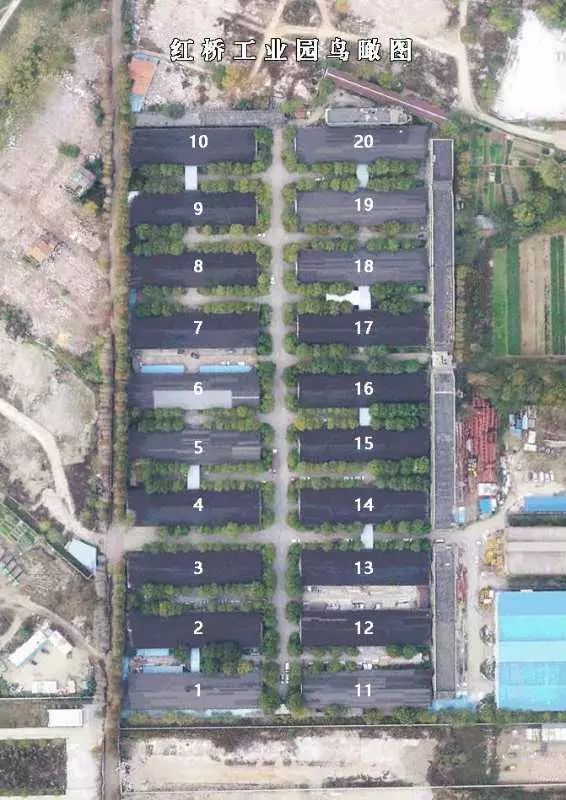

火神山“三千勇士” |武汉肺炎亲历-中经实时报-中国经营网
原文链接 备份链接 火神山“三千勇士” |武汉肺炎亲历 2020-01-28 08:20 作者：王迎春 来源：中国经营网 本报记者 王迎春 武汉报道 1月27日，武汉市蔡甸区知音湖畔，占地5万平方米的滩涂草坡地完全变了模样，工人们正在操作 …
澎湃新闻记者 陈伊萍
2月14日晚8时许，上海市政工程设计研究总院(集团)有限公司（以下简称“上海市政总院”）接到武汉长江新城建设投资集团有限公司的紧急委托，承担武汉长江新城方舱医院的市政配套设计工作。按照防控部署，上海市政总院要在次日清晨6时前完成设计初稿。
疫情就是命令，防控就是责任。作为市政基础设施行业的“国家队”，上海市政总院当即回复“我们一定按时按质完成设计任务”。时间紧、任务重，上海市政总院各方力量迅速集结行动起来，同时间赛跑，与疫情较量，坚决跑赢这场“冲刺赛”和“接力赛”。

长江新城方舱医院计划建设20个舱位，共计3000多张床位。 文汇网 图
2月14日20时18分，上海市政总院紧急组建44位由城交地下院、市政交通院、五院、造价公司、正继公司及武汉现场的部门所长及以上专业骨干组成的团队。项目负责人刘俊看了看表，第二天清晨就要完成设计初稿，这场“大考”的考试时间，一共只有582分钟。这是一场与时间的赛跑，一刻也缓不得、一刻也松懈不得。
在刘俊的组织协调下，立即召开网络会议，对武汉分公司收集的既有建设场地特征及现有条件等进行综合分析判断。各专业心连心、齐行动，倒排时间、协同推进，立即投入到紧张的工作中。
22时30分，距离交卷还有450分钟。网络会议确定了本次设计内容，道路、建筑、结构、造价、给水、管线及污水收集、固废、电气、监控等专业设计人员全部到岗。包括医院与外界现有市政路的接驳道路、院内人行道整治、照明与监控、卫浴设施布置、废水消毒处理与排放、医疗固废存储与转运、病区连廊雨棚钢结构等子项分工明确，项目设计正式开展。
23时00分，“考试”进行155分钟后，方舱医院市政配套设施的设计原则与标准讨论完成，方案结合国家卫生健康委疾控局近期下发的关于临时特殊场所卫生防护要求，综合考虑武汉现场施工条件，在确保方舱医院功能性要求的前提下，为推进现场施工创造有利条件。
凌晨1时30分，时间只剩下约270分钟，此时团队在设计过程中遇到了挑战。根据2月5日刚刚发布的《方舱医院设计和改建的有关技术要求》以及相关指导文件，对方舱医院的建筑平面布置、诊疗卫生流程、区域标识隔离等诸多方面作出了特殊要求，方案设计受到了许多边界条件的限制。同时，建筑结构改造要对医疗设备载荷、设备移动时的重量和载荷等进行多重计算，既要考虑改造效率，又要确保安全可实施。
就在这时，几位参与审核的总师加入了工作群。在接到求助电话后，他们当即投入工作，通话中听不出他们有丝毫困倦。面对如此紧迫又特殊的设计任务，项目总体协调与各专业总师直接对接，实现系统集成、总体把控，力求方案最优；专业负责人和设计人员与审核实时沟通，设计优化同步开展，很快，设计难题迎刃而解。
凌晨4时15分，上海市政总院全体参战人员已经连续奋战8个小时，他们紧盯着屏幕，生怕漏过任何一个数字。每个人心里都绷着一根弦，憋着一股劲，生怕设计的细节还有疏漏，生怕“答题”交卷的时间愈发临近，但他们完全挤不出看表的间隙。
凌晨6时00分，到了预定的交卷时间，项目负责人刘俊再次看了看表，长长地松了口气——对44位参战者来说，这是一个不眠夜，他们彻夜不休、克服困难，通过连夜奋战，终于阶段性完成了施工图设计任务。但救护生命的方舟建设刻不容缓，准时交卷只是与病毒赛跑中途的胜利。与疫情搏斗，确保医院早日建成，依然需要他们一秒都不能松懈。
为便于图纸指导施工，本部设计团队通过视频会议系统，全天候以网络值班的方式远程提供咨询及建议，对施工现场问题随时反馈、随时研究、随时修改设计，同时安排武汉分公司两位专业技术人员，现场24小时不间断提供施工配合服务。
“现场交给我们了，上海的战友们，武汉不是前线，武汉是我的家。”2月15日的武汉，一场不期而遇的寒潮降临，但武汉分公司的李威和朱玮，不畏艰苦，毫不退缩，早晨7时，他们便顶着雨夹雪出门了。走在清晨空无一人的街道上，心却很热乎，能为抗击疫情做出贡献，值得！
为保证技术人员现场的生命健康和安全，上海市政总院根据疫情防护办法成立后勤保障组，要求务必做到：施工配合采取轮班倒机制，领导实时关注和严格控制每位员工的作息时间以免造成过免疫力降低；在外必须配带护目镜、防护口罩、防护手套，进入办公室或回家立刻用消毒液洗手，并对外衣进行喷淋消杀，将用过的一次性防护用品消毒密封处理后投入专用垃圾收集箱，避免二次污染；针对现场医护资源紧缺的情况，及时调配口罩、护目镜等资源送达施工配合人员手中。
戳这里进入
“全国新型冠状病毒感染病例实时地图”↓↓↓

本期编辑 周玉华
推荐阅读


原文链接 备份链接 火神山“三千勇士” |武汉肺炎亲历 2020-01-28 08:20 作者：王迎春 来源：中国经营网 本报记者 王迎春 武汉报道 1月27日，武汉市蔡甸区知音湖畔，占地5万平方米的滩涂草坡地完全变了模样，工人们正在操作 …
原文链接 备份链接 “我在窗台旁看了很长一会雪，特别想家，我们也在问什么时候结束。” “病友们觉得床上有电热毯，冷的话躲在被窝里就行了。医护人员没什么地方可以躲，所以除了个别患者有畏寒的情况，就让医护人员优先用（取暖设备）。” *“一 …
原文链接 备份链接 图片来源：同济大学附属东方医院 记者：刘素楠 编辑：徐菲 “ 大多数病人都比较稳定，多数患者只需药物治疗甚至可以不服药物。 ” 2月9日下午2点至次日凌晨，武汉客厅方舱医院B区来了百余位患者。他们一批批从大巴上下来，进 …
原文链接 备份链接 伴随着火神山、雷神山医院开始收治病人，15家方舱医院陆续启动， 各省医疗队开赴武汉，武汉所有确诊患者与疑似病例都将“应收尽收”。 在人类抗击疫病的历史上，“武汉会战”已成为一场史无前例的超级行动 图/新华、中新 武汉 …
原文链接 备份链接 非常时期，武汉成了全国人民挂念、祈福的城市。封城后，武汉人民的真实生活是什么样？ 正和岛自1月26日起特别推出《叶青：我在武汉疫区的第N天》专栏。叶青是一位定居武汉40年的市民，也是一名学者和官员。接下来的一段时间，他 …